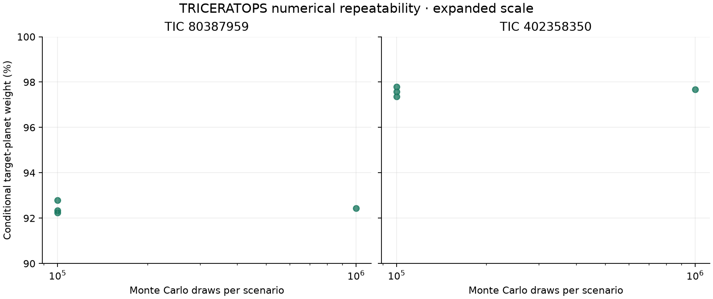
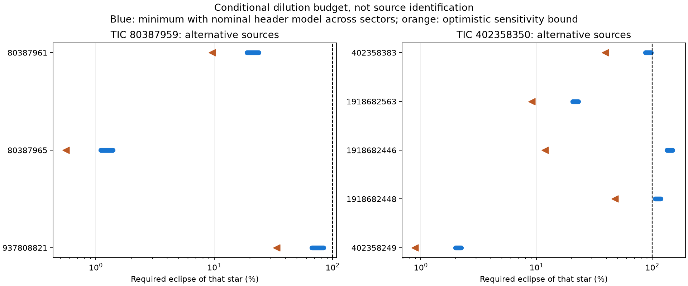
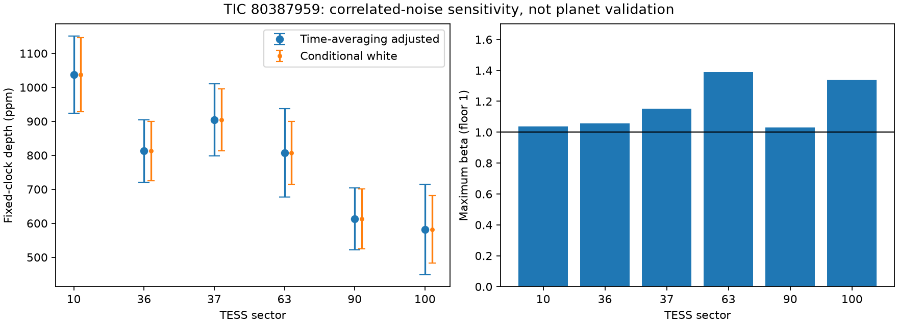
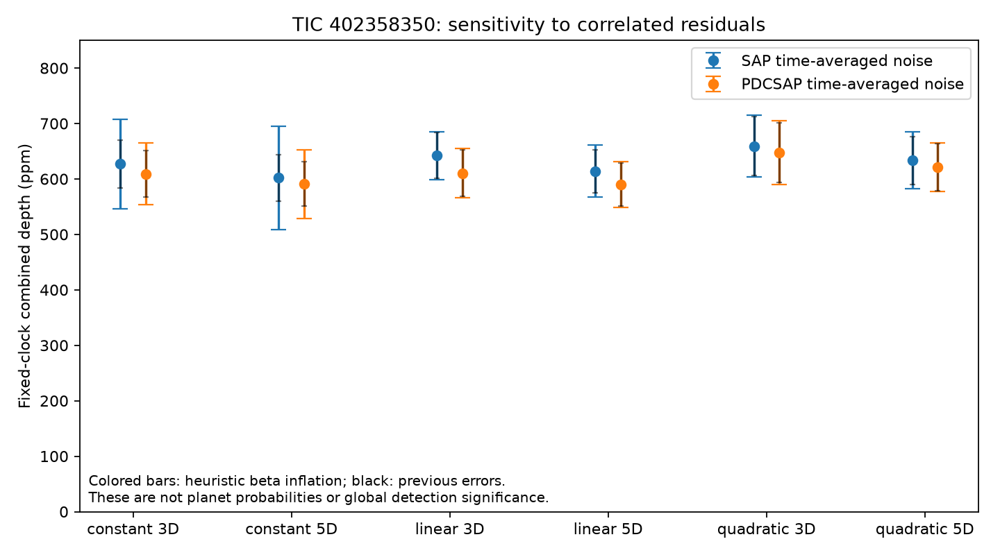
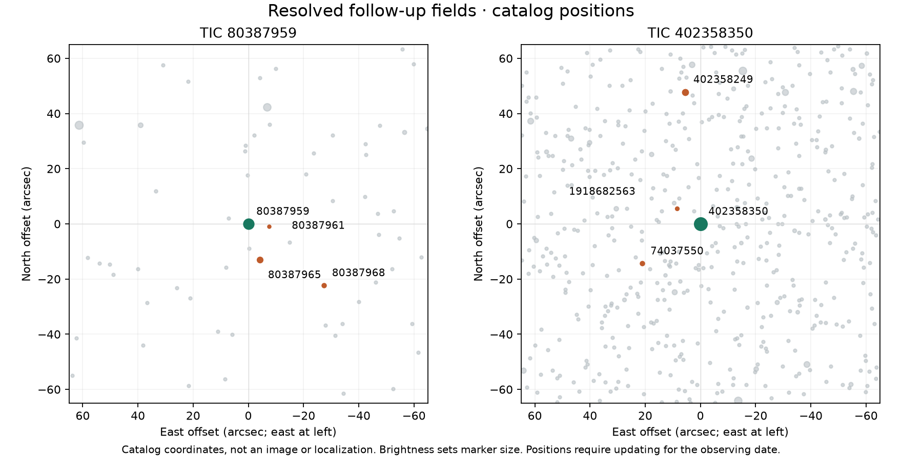

Exploratory analysis / 13 October 2026
TRICERATOPS model comparison
TRICERATOPS compares planet transits with stellar eclipses and blended sources. The figures below are conditional weights within that model, not calibrated probabilities that these signals are planets. This calculation uses one previously inspected sector per candidate, rather than all available observations.
The target-planet and other-scenario columns sum to 100%. Nearby-source weight is part of FPP and includes planets around neighboring stars as well as stellar eclipses. It is not an additional, independent probability.
Neither candidate meets the published numerical validation thresholds: FPP below 1.5% and NFPP below 0.1%.
Numerical convergence is not established. The million-draw calculation has not been repeated with independent seeds. Lower-draw repeats measure sampling variation, but do not account for uncertain stellar properties, contamination, timing, or correlated noise.
Instrumental artifacts and general stellar variability are absent from the scenario comparison. The calculations also do not incorporate our earlier source-localization failures or timing concerns as likelihood terms. Neither candidate is validated by these results.
Numerical repeatability, controls, and noise sensitivity
The same restricted setup gives known planet Kepler-93 b a target-planet weight of 82.9%. Its published validation used additional evidence that is absent here. A higher weight for our candidates does not establish stronger evidence than for this known planet. With every TIC 80387959 flux sample set to unity, removing both the dip and scatter, the constant-flux control receives 44.2% target-planet weight and 81.4% for planets across all modeled hosts. The model normalizes its allowed explanations even without a transit.
- TIC 80387959: target-planet weights of 92.2%–92.8% across three 100,000-draw seeds.
- TIC 402358350: target-planet weights of 97.4%–97.8% across three 100,000-draw seeds.
The model uses the original SAP apertures, ten-minute sampling, fixed ephemerides, and a Gaussian approximation to the stellar image. Exact catalog duplicates were removed before the adopted runs. Some neighboring stars are excluded by the assumed flux budget; those exclusions have not been verified by resolved observations. Missing stellar parameters are estimated from photometry.

The previously identified neighboring source TIC 1918682563 is included in the TIC 402358350 model. Its low relative weight does not exclude an eclipse: the earlier brightness audit and this model both allow it to supply the observed decrement.
A known-planet control, constant and inverted light curves, and increased-noise calculations test the behavior of this setup. Their full results are retained in the assessment and downloadable run records. These checks do not calibrate the probabilities for a population of unknown signals.
Method: Giacalone et al. (2021); TRICERATOPS v1.1.0, software citation.
02Source attribution and vetting
Potential contamination by neighboring stars
We used the measured aperture-flux dips to estimate the eclipse depth required on each cataloged neighbor to reproduce the signal. The calculation depends on uncertain aperture throughput, source identification, and magnitude estimates.
These values are calculated eclipse requirements; no such eclipses have been observed. The estimates use generous aperture-throughput assumptions and nominal pipeline models. Both neighbors could supply enough flux to account for the measured dips. Their contribution, and that of other nearby sources, remains unresolved.
See the full neighbor comparison

Blue ranges use nominal header models; orange markers are optimistic sensitivity bounds. Neither is a probability or a measured neighbor eclipse.
Full assumptions and all-source audit ↗Vetting results
The analysis incorporates noise and neighboring-source brightness checks adapted from the refereed studies cited below. It retains earlier failed checks. The telescope observations and complete software workflows used in those studies have not been reproduced here.
Inspect the noise-diagnostic figures


The two audits adapt time averaging to different saved fit structures. Their inflation factors are sensitivity diagnostics, not comparable planet-reliability scores.
Resolved-source follow-up
New archival tests examine two additional neighboring stars. Neither candidate has been validated. The observation packet below preserves the existing clocks and their timing limitations.
TIC 80387959 is the priority for a resolved observing attempt. Measure the target and competing stars separately across the allowed event window. A neighbor can only be cleared if timing coverage and measured precision could detect the required eclipse. Resolving one alternative does not establish a planet.
The packet lists nominal events through April 2027. These are site-independent planning windows, not a telescope schedule or calibrated confidence intervals. Five-site visibility and LCO one-meter tracking limits have now been checked; weather, access and equipment sensitivity remain unestablished. UTC values are approximate geocentric conversions; BJD_TDB values retain the scientific time convention.
No robust full LCO one-meter track is established. Three TIC 80387959 windows pass the sky screen, but only 20 March 2027 at CTIO passes the tracking limit, with about 82 sidereal seconds of margin. None passes the conservative mount-margin test. TIC 402358350 has no complete window in the tested five-site network. Other sites, equipment or explicitly revised observing plans could differ.
Public LCO images add no transit test: nine science exposures precede the predicted TIC 80387959 event. The two inspected baseline frames saturate both the target and its main neighbor, so they do not demonstrate usable photometric precision. An apparent TIC 402358350 spectral match has a pointing about 5.3° away; it is not established candidate spectroscopy.
Further ESO raw-observation and CHEOPS visit metadata searches return no pointings within two arcminutes of either target. These bounded archive nonmatches do not exclude companions or every off-axis observation. No new flux was opened. The remaining-evidence review records the reviewed routes and observation dependencies.
SuperWASP metadata adds only seven measurements over 37 minutes for the nearest TIC 80387959 source and no source in the TIC 402358350 cone. No useful recurrence test is identified, and no light curve was opened. Backward timing propagation also fails the original precision gates at four representative 2004–2009 dates; a narrow fixed-clock non-detection would be inconclusive.
One alternative observing window is plausible, but not operationally verified: T17 at Siding Spring, 28 March 2027, approximately 12:05–17:43 UTC. It passes the sky requirements and an illustrative horizon model, but the actual obstruction mask, tracking/meridian behavior, access and photometric precision remain unverified. Geometry and assumptions · Independent review · Unsent operator inquiry.
Field diagrams and observation packet

Green marks targets; orange marks selected alternatives. These are catalog diagrams, not telescope images or source localizations. Update positions for the observing date using the packet’s proper motions.
Assessment status
TIC 80387959 has higher follow-up priority because of its repeatability and timing recoveries. Both signals remain ambiguous. The observations establish recurring dimming but do not establish a planetary origin. Absence from the checked catalogs does not establish that either signal is previously unknown.
The software suite passed 54 tests, and separate numerical checks reproduced the new calculations. These checks assess implementation and reproducibility, rather than planetary status. This assessment has not been peer reviewed.